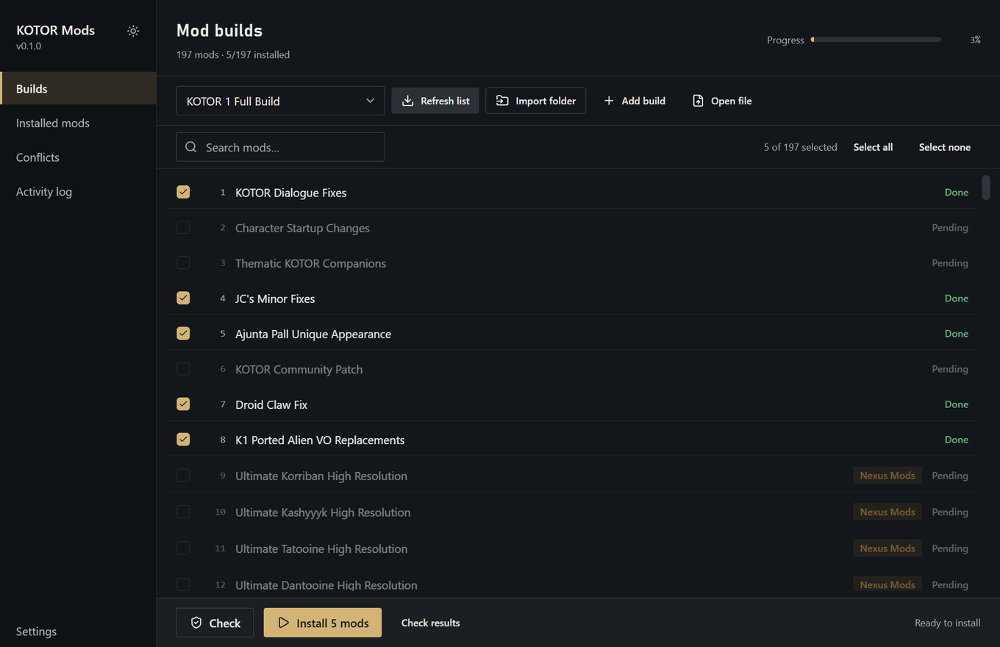

KotOR I & II / Modding tools
ModSync
Your build. In order.
Bring your game. Pick your mods. ModSync follows the guide, checks the install, and keeps a snapshot to restore from.
A Kolto Labs tool for Knights of the Old Republic and The Sith Lords.
[ Inside the app ]



The desktop app, captured on a test copy of KotOR. Select a still image to stop a clip.
[ Follow the guide ]
A KotOR mod build is more than a list of downloads. Its guide sets the order, the options, and the steps each mod needs. ModSync reads those instructions and installs the mods you choose, in the order the author intended.
Bring your own copy of the game. ModSync contains no mods or game files; each mod belongs to its author. Follow your guide for the required downloads.
From guide to game
- Load the guideOpen the build's instruction file.
- Choose your foldersYour game folder, and the folder with the downloaded mods.
- Pick your modsOne by one, or a whole category at once.
- Check, then installThe check changes nothing. Then every mod installs in order.
On the workbench
- Follows the guide's install order and dependencies
- Snapshot before installing, with one-click restore
- Opens ZIP, 7z, RAR, TAR and GZip archives
- Runs TSLPatcher-style patchers when you allow it
- Detects KOTOR, KOTOR 2 and the Aspyr release
- Spoiler-free names when the guide provides them
[ Bring your own ]
- Your own installation of KotOR I or II
- The instruction file for your mod build
- The build's mods, downloaded into one folder
- Free space for a copy of your game and mod folders
[ Get started ]
- Back up your game folder.
- Download ModSync and unzip it anywhere.
- Open it and follow the four steps above.
New to it? Try it on sample folders first. If an install fails, restore and start again.